Pre- school admission dates are rescheduled to 22/02/2024 instead of 20/02/2024.and 24/02/2024 instead of 21/02/2024, click here...
Parent Login TCEVENTS
Book launch authored by Nirupama Ma'am - 02 Feb 2024

On 2nd February 2024, our school gathered in the school playground to give their honour and heartfelt wishes to our respected English teacher Mrs. Nirupama Singh Solanki for the release of her book “Right Writing Skills “
She introduced all of us with her writing potential including some articles of our students from various classes. Our honourable Principal Sr. Mary Remya released the book and congratulated her. She appreciated her hard work and dedication which boosted her morale. Later the event was concluded by singing the school song .
Parent -Teacher Meeting and Exhibition - 27 Jan 2024
A successful Parent Teacher Meeting coupled with an engaging exhibition was held on January 27,2024.
The event was a resounding triumph, showcasing the collaboration between parents, teachers and students.
Throughout the day, parents actively engaged with teachers, discussing their children’s progress, academic stengths, and areas for improvement. One of the highlights of the day was the students exhibition, which featured an impressive display of projects, artworks and achievements across various subjects.
Parents expressed appreciation for the opportunity to witness their child’s growth and development beyond the traditional academic setting.
The Parents- Teachers Day with the Exhibition on January 27, 2024, was a resounding success, bringing together parents, teachers, and students in a celebration of education, achievement, and community.
Republic Day Celebration- 26 Jan 2024
On the 26th of January 2024, Notre Dame School celebrated Republic Day with great enthusiasm and fervour, honouring the democratic heritage of India. The event reflected the school’s commitment to instilling patriotic values in its students and fostering a sense of unity among all.
The ceremony commenced at 8:15 A.M. with the hoisting of the national flag, a powerful symbol of India’s sovereignty and unity. The entire school, along with esteemed guests and dignitaries, stood in reverence as the national anthem echoed through the grounds, evoking a sense of pride and patriotism.
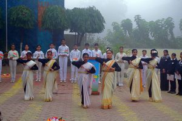The highlight of the event was the presence of Mr. Vijay Prasad Singh, the State Chief Commissioner of Scouts, and Guides, who graced the occasion as the Chief Guest. Mr. Singh, with his vast experience and notable contributions to education, added immense value to the celebration.
The cultural program that followed was a testament to the rich cultural heritage of India. The school choir, with their melodious voices, captivated the audience with renditions of patriotic songs, including the timeless “LET MY COUNTRY AWAKE” by Rabindranath Tagore. The students showcased their talents through skits and songs that beautifully portrayed the constitutional values enshrined in India’s ethos.
Mr. Vijay Prasad Singh delivered an inspiring speech, emphasizing the significance of Republic Day and the role of the youth in nation-building. His words resonated deeply with the audience, leaving a lasting impression on all present.
The program concluded with an enlightening speech by Hon’ble Principal Sr. Mary Remya, who eloquently explained the preamble of the Indian Constitution, highlighting its values and the responsibilities of citizens towards the nation. She emphasized that everybody is equal before the law and elaborated on the fundamental rights guaranteed by the Constitution, underscoring the importance of upholding these rights for a just and inclusive society.
Overall, the Republic Day celebration at Notre Dame School was a resounding success, reflecting the school’s commitment to nurturing responsible citizens imbued with a deep sense of patriotism and respect for their country’s values. It was a day filled with pride, joy, and a renewed sense of commitment to the ideals of the Indian Republic.
Mantras of Hon'ble Prime Minister (Painting Competition) - 23 Jan 2024
On January 23, 2034, Notre Dame School participated in a painting competition hosted by Kendriya Vidyalaya, Badarpur. The event brought together artistic talents from various schools to showcase their interpretation of the mantras of the Hon’ble Prime Minister.
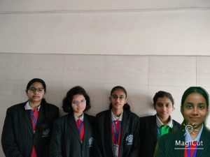The venue for the competition was Kendriya Vidyalaya, Badarpur, providing a conducive environment for artistic expression and fostering a spirit of creativity among the participating students.
Notre Dame School was represented by a team of five enthusiastic and talented students.
These students showcased not only their artistic prowess but also their commitment to expressing the ideals encapsulated in the mantras of the Hon’ble Prime Minister.
Theme: Mantras of the Hon’ble Prime Minister:
The theme of the competition was to depict and interpret the mantras provided by the Hon’ble Prime Minister. Participants were encouraged to express their understanding and creativity through the medium of art.
The participants from Notre Dame School exhibited exceptional creativity and a deep understanding of the chosen theme. The artworks showcased a diverse range of styles, techniques, and perspectives, reflecting the unique talents of each student.
The painting competition at Kendriya Vidyalaya, Badarpur, served as a platform for students to not only display their artistic abilities but also to contribute meaningfully to the discourse around the mantras of the Hon’ble Prime Minister. Notre Dame School’s participants represented the school admirably and added vibrancy to the event with their insightful and imaginative artworks.
This event not only provided a space for artistic expression but also fostered a sense of camaraderie among students from different schools. Notre Dame School looks forward to participating in future events that promote creativity, expression, and collaboration.
Principal's Day - 20 Jan 2024
On January 20th, 2024, Notre Dame School celebrated Principal’s Day with a grand event in the school’s Ground, which was adorned with beautiful decorations, creating a festive atmosphere. The event was meticulously organized by a dedicated team comprising students and staff members. Despite the constraints of time, the students admirably managed all the planning and preparations, ensuring that the day was extraordinary for our Principal, Sr Mary Remya, and our respected Headmistress, Sr Mary Ritika.

The students poured their hearts into creating awe-inspiring performances that reflected their deep gratitude towards our principal. The festivities commenced with a synchronized prayer dance performance by students from various grade levels. Their captivating dance, set to an upbeat medley of songs, symbolized their admiration and respect for our principal’s unwavering dedication to our school.
Following the dance, a group of talented students took centre stage to serenade our principal and Headmistress with melodious singing. Their harmonious voices resonated, reflecting the unity and camaraderie that define our school under their guidance.
Furthermore, several students delivered heartfelt speeches expressing their appreciation for both Sr Mary Remya and Sr Mary Ritika. These speeches were not only inspiring but also deeply moving for both our principal and the audience.
As a token of their gratitude, the students presented our Principal and Headmistress with lovingly crafted handwritten cards, showcasing their affection and respect. Accompanying these cards was a bouquet of flowers, symbolizing the blossoming gratitude nurtured under their leadership.
The Principal’s Day celebration at our school was a remarkable event filled with emotions of respect, gratitude, and admiration for our principal and Headmistress. The theme, “Symphony of Leadership,” was aptly reflected in the harmonious performances and heartfelt expressions of gratitude. Through dance, song, and speech, our students conveyed their profound appreciation for our principal and Headmistress’s relentless commitment to their education and overall well-being. Such celebrations not only honour our leaders but also inspire them to continue their pivotal role in shaping the lives of our students and the school community as a whole.
Inter-faith Week Celebration at the Lotus Temple - (18 Jan 2024)
An enlightening educational trip was organised by Notre Dame School, Badarpur under the guidance of our esteemed Principal Sr. Mary Remya. The purpose of this excursion was to celebrate – ‘ Inter faith week’, featuring a deeper understanding among the class 7 students about the unity that transcends religious boundaries.
On the 18 of January, the students embarked on a visit to the Lotus Temple, a renowned symbol of Inter faith Harmony and architectural marvel.
The Educational Trip provided students with a unique opportunity to reflect on the shared values that underpin different religions, featuring a sense of inclusivity and promoting the understanding that, despite varying religions practices, humanity shares a common bond.
This initiative exemplified the schools commitment to holistic education, nurturing students to became compassionate and open – minded individuals in our diverse society.
Inter-faith Speech (16 Jan 2024)
On the 16th of January 2024, Notre Dame School hosted a meaningful and enriching inter-faith special assembly that brought together students from diverse religious backgrounds. The assembly aimed to promote understanding, respect, and harmony among students of different faiths.
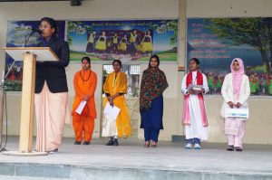The assembly commenced with a warm welcome extended to all students and teachers present. It was followed by presentations from students representing various religious traditions, highlighting the significance of their respective faiths and the values they embody.
The atmosphere was filled with a sense of unity and inclusivity as students listened attentively to the presentations, showing respect for each other’s beliefs. The assembly provided a platform for students to learn about different religions, fostering a spirit of tolerance and acceptance within the school community.
The event concluded with a message emphasizing the importance of mutual respect and cooperation among individuals of different faiths. It was a reminder of the school’s commitment to promoting inter-faith understanding and building a culture of peace and harmony.
The inter-faith special assembly was a resounding success, leaving a positive impact on the students and reinforcing the school’s values of diversity and inclusivity.
Farewell to Rai Kar Maam- 23 Dec 2023
On the 23rd of December 2023, Notre Dame School was abuzz with excitement and festive spirit as it celebrated Christmas with a special program and various activities. The day was not only about spreading joy and cheer but also about honouring the dedication and service of two beloved teachers, Poonam Ma’am, and Beena Ma’am, on their silver jubilee. Additionally, the school bid farewell to Raikar Ma’am, marking the end of an era. To add to the festivities, a carnival with vibrant stalls was set up, creating a lively atmosphere that captivated both students and attendees.
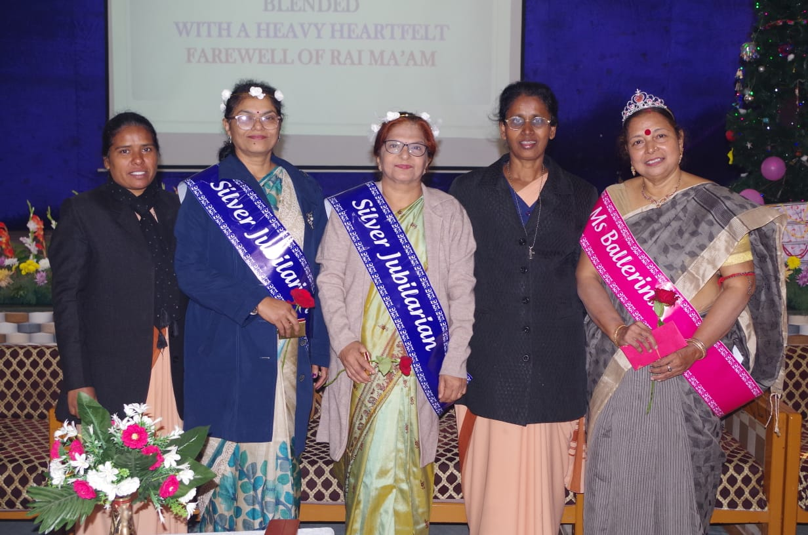Christmas Program:
The day commenced with a heart warming Christmas play that brought the story of the Nativity to life. Students showcased their talents through music, dance, and drama, captivating the audience with their performances. The play was a beautiful reminder of the true spirit of Christmas, spreading messages of love, compassion, and hope. The festive ambiance was further enhanced by the enchanting decorations that adorned the school premises, creating a magical setting for the celebrations.
Silver Jubilee Celebration:
Amidst the Christmas festivities, Notre Dame School took the opportunity to honour the remarkable service of two of its esteemed teachers, Poonam Ma’am and Beena Ma’am, who were celebrating their silver jubilee. The school community came together to express their gratitude and appreciation for their years of dedication, hard work, and commitment to shaping young minds. The jubilant atmosphere was filled with heartfelt speeches, accolades, and tokens of appreciation, making it a memorable day for the teachers and the entire school community.
Farewell to Raikar Ma’am:
As the school celebrated new beginnings with Christmas, it also bid a fond farewell to Raikar Ma’am, who had been an integral part of the school’s journey. Her departure marked the end of a chapter filled with valuable contributions and cherished memories. The school expressed its gratitude for her years of service and wished her the very best in her future endeavours.
Carnival:
Adding to the festive vibe, a carnival was organized on the school grounds, featuring a variety of colourful stalls offering games, food, and entertainment. The carnival provided a delightful experience for the children, who enthusiastically participated in the activities, enjoying the festive treats and games. The lively atmosphere of the carnival complemented the spirit of celebration, creating a day filled with joy and excitement for everyone involved.
Visit to the Old age home (19 Dec 2023)
On 19th December 2023, four students:- Maureen, Palak, Jai and Heer accompanied by teachers Winston Sir, Sheelu Ma’am, and Soya Sir, visited the Mother Teresa Old Age Home. The purpose of the visit was to bring joy and comfort to the senior citizens residing there.
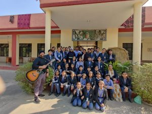During the visit, the students interacted with the elderly residents and were deeply moved by the stories they shared. Witnessing the harsh reality of how some senior citizens are ill-treated by their own families was a poignant reminder of the challenges faced by the elderly in today’s world.
To uplift their spirits, the students sang songs and Christmas carols, spreading warmth and joy throughout the home. Additionally, as a gesture of kindness and support, all the students donated necessary daily use items to the residents.
The visit was a humbling experience for the students, reinforcing the values of compassion and empathy. It served as a reminder of the importance of reaching out to the elderly members of society and making a positive difference in their lives.
GRADUATION DAY -16 DEC 2023
The Graduation Day ceremony for the Class 12th students at Notre Dame School on 16th December 2023 was a momentous occasion filled with pride and nostalgia. The event marked the culmination of years of hard work and dedication for the graduating students, as they prepared to embark on a new chapter in their lives.
The presence of Shri D.V.Lakshmipathy, CGM of B.T.P.S. Eco Park, as the Chief Guest added prestige and honour to the ceremony. His inspiring address resonated with the graduating students, urging them to embrace the future with confidence and determination.
The ceremony was a blend of solemnity and celebration, as students received their diplomas and awards amidst applause and cheers from their peers, teachers, and parents. It was a bittersweet moment, as students bid farewell to their alma mater, filled with gratitude for the knowledge and experiences gained during their time at Notre Dame School.
The Graduation Day ceremony was a fitting tribute to the graduating class, celebrating their achievements and wishing them success in all their future endeavours. It was a day filled with emotions and memories that will be cherished by the students and the school community for years to come.
Annual Day Celebration of Primary Section-9 Dec 2023
The Annual Day celebration at Notre Dame School on 9th December was a delightful event filled with joy and enthusiasm. The school premises were adorned with vibrant decorations, setting the stage for an unforgettable day. The Guest of Honour was Shri. D.V.Lakshmipathy , CGM B.T.P.S. Eco Park.
The highlight of the event was the captivating play “Cinderella,” presented by the primary students with remarkable enthusiasm and talent. The play was a visual treat for the audience, showcasing the students’ acting skills and dedication to their roles.
Adding to the charm of the event were the mesmerizing dance performances by students from all classes. Each dance performance was unique and filled with energy, showcasing the diversity of talents among the students. The dances added vitality to the play, creating a perfect blend of entertainment and artistic expression.
The event was gracefully hosted by the young and talented students of Class I and II, who took on the role of Masters of Ceremony (MC). Their confidence and poise on stage were commendable, as they guided the audience through the various segments of the program with flair and charisma.
The presence of Shri D.V.Lakshmipathy , CGM B.T.P.S. Eco Park as the Chief Guest added prestige to the occasion. His inspiring words of encouragement and appreciation for the students’ performances uplifted the spirits of everyone present.
The Annual Day celebration at Notre Dame School was a resounding success, showcasing the talents and creativity of the students. It was a day filled with joy, laughter, and memories that will be cherished by all for years to come.
Annual Day - 04 Nov 2023
The Annual Day Program at Notre Dame School on the enchanting evening of November 4, 2023, unfolded as a truly grand spectacle, graced by the esteemed presence of distinguished individuals. The anticipation heightened as Chief Guest Archana Verma made a regal entrance, escorted by the Head Boy and Head Girl, creating a visual representation of the significance of the occasion.
Our respected Principal Sr. Mary Remya’s vision echoed through the entire program, serving as a guiding light for the school community and emphasizing the importance of unity, understanding, and shared values in shaping a harmonious society.
The Guest of Honour, Sri Vijay Chand, General Manager of Eco Park, alongside other dignitaries, added an extra layer of grace to the event, their collective presence elevating the celebration to a truly memorable experience. Their speeches resonated with the overarching theme, emphasizing the importance of unity, and understanding in a world often besieged by discord.
During her insightful speech, Chief Guest Archana Verma shared profound wisdom, highlighting the notion that failure serves as the greatest key to success. Her words encouraged the audience, especially the students, to embrace setbacks as opportunities for growth, resilience, and learning. She elaborated on her own experiences, emphasizing the invaluable lessons gleaned from overcoming challenges and setbacks in her illustrious career. This message added a layer of depth to the event, leaving a lasting impact on the hearts and minds of everyone present.
As the program unfolded, showcasing the collective efforts of the school community through mesmerizing performances and thematic presentations, it became evident that the evening wasn’t just a series of events but a celebration of shared values and aspirations. The harmonious blend of cultural showcases, dances, and thought-provoking presentations left an indelible mark, fostering a sense of unity and purpose among students, parents, and esteemed guests alike. The Annual Day Program at Notre Dame School served not only as a testament to academic achievements but also as a poignant reminder of the school’s commitment to nurturing individuals who contribute positively to a world characterized by peace, understanding, and shared aspirations.
Teachers' Day Celebration- 05/09/23
“The influence of teachers extends beyond the classroom, well into the future”-F.SIONIL JOSE
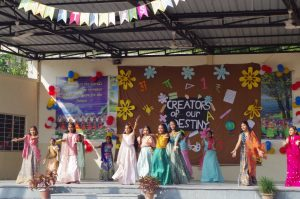On the 5th of September 2023 ,Notre Dame students celebrated ,with great gratitude Teachers Day. The teachers were formally invited a day in advance and on the 5th of September each one looked transformed like Cinderella… in the best of their attires ,as they walked the Isle towards the seating arena. Flowers and good wishes was showered by students eagerly awaiting on both the sides of the isle,while a beautiful music played in the background.
The program commenced with invoking God’s blessings and lighting of the holy lamp. The stage was awesomely decorated with flowers, balloons and festoons. Students presented a plethora of program to showcase their gratitude towards their mentors .There was a variety in form of speeches ,skits, dances etc…etc..
All very well interwoven and synchronised. The student council played an important role of keeping the entire student body disciplined. Principal Sister Mary Remya in her speech made aware everyone about the great philosopher and educationalist Dr. Radhakrishnan Sarvepalli. It is in his honour that the Teachers Day initiated.. Sister expressed the great role played by the teachers in shaping the future of the students and contributing to the society .She very rightly and aptly pointed out that teachers are the mothers of all profession and deserved to be respected the most.
Headmistress Sister M.Ritika also thanked the teachers for their dedicated service and reminded them that this is not a profession but a calling.
Later the staff met for lunch where an enriching and motivating message was delivered to the teachers by Reverent Sister M. Lalita, everyone felt overwhelmed listening to her.
To add to the merriment some very interesting games like rolling out chapatis, musical chair etc were played and enjoyed by the staff members .
Gifts and personal cards were offered.
The teachers appreciated the program .
The event concluded with vote of thanks given by Sir Winston.
It surely was a memorable day!
Youth Ideathon - 12 October 2023
It is not enough to aim, you must hit.
The Ministry of Skills organized the prestigious Youth Ideathon 2023, a nationwide competition, which witnessed an overwhelming participation of over 5,00,000 schools. We are delighted to announce that out school, represented by Class 9B, was among the selected few, showcasing our students’ remarkable ingenuity. Their innovative idea of formulating a natural herbal oil for reversing white hair gained significant recognition. This product promises to be a groundbreaking solution for addressing the issue of premature greying. We eagerly anticipate the forthcoming stages of this competition, where our students’ idea will undoubtedly shine.
Well done, Notre Dame Innovators!
SPECIAL ASSEMBLY on GANDHI JAYANTI 02 Oct 2023
2nd October being a national holiday , on 3rd October 2023 , the students of standard XII showcased an informative assembly on Gandhi Jayanti at Notre Dame School, New Delhi, under the guidance of our respected Principal Sr. Mary Remya. The students demonstrated the various life stages of Mahatma Gandhi.
Through an energetic and impressive representation they exhibited Gandhiji in his childhood, youth and old age, unveiling numerous layers of his struggling and transformative life.
The assembly resided into his philosophical and life-changing teachings, highlighting the principles of non-violence, truth and equality. Students sincerely and passionately described the anecdotes from Gandhiji’s extraordinary life, leaving the audience listening attentively and interestingly and enlightened by his eternal legacy. The students also did a dance performance describing Gandhiji’s physique, and appearance.
Also, not forgetting that 2nd October is also associated with Lal Bahadur Shastri ji, the students gave a brief description about him and his participation in the freedom struggle. The audience applauded on this powerful and inspiring assembly. In the end, our respected Principal, Sr.Mary Remya motivated us by requesting us to follow the path of peace, non-violence and ahimsa.
Inter - School Basketball Match 30 September, 2023
On 30thSeptember, 2023 the two basketball regional winners faced each other in a friendly encounter. The host Notre Dame had dominated against Frank Anthony Public School in the previous encounter and won the battle with the score line of 52-31. But this time the FAPS were here to show tough competition, were looking strong after defeating DPS, Mathura Road in the Zone’s final.
Damians were playing in their home court after a long time and it was the Principal of Notre Dame Sr. Mary Remya that made it possible. Sports teachers of both the school Mr.Soya John and Mr.Priyanshu were the ground referees who conducted the game peacefully by their non-biased decisions. The match started and as expected the away team took an early lead but it took just few minutes to turn the table and Damians’ attacker’s determination made it possible. None of the teams were allowing the other to move forward but as one of the main players of host’s got injured, the away team took the benefit of it and made a massive lead of 11 points and the score line was 35-44 but the home team made a wise substitution and the whole new five was on the court. The perfectly coordinated home team’s defence started to dominate the match. In a few minutes, the substitutes pulled the score to 45-44 in the favour of host. The FAPS were stunned by the performance of home team. The final whistle blew at the score of 64-64 showing the toughness of the match.
Friendly matches are the best way to exchange school culture as well as enhancing the relationship between the schools. These matches also help in better exposure to the players through competitions.
Mathematics week 16th August - 23th August , 2023
Mathematics Week was celebrated from August 16th to August 23rd. Throughout the week, students were engaged in various activities that not only enhanced their mathematical skills but also creativity.
Activities which took place from August 16th to August 23rd, 2023
Mental maths
Model /mathematical designs
Rangoli
Speeches on Mathematicians and applications of mathematics in day today life.
Mass participation was there. Students were quite enthusiastic to show their mathematical skills.
Mathematics week was a great success. We look forward to future maths weeks that continue to inspire our students.
Independence Day Celebration - 15/08/23
“At the stroke of the midnight hour, when the world sleeps India will awake to life and freedom” J.L. Nehru
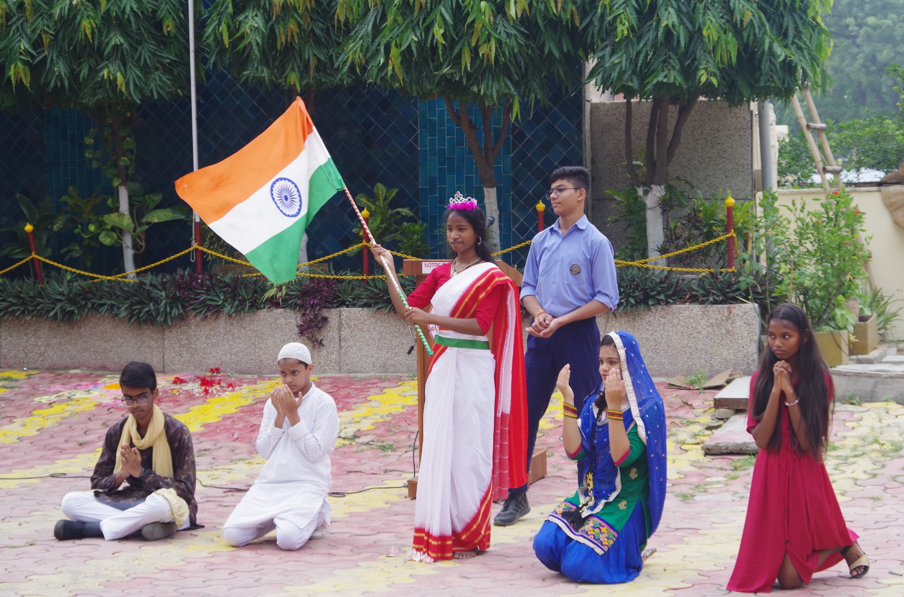On the 15th of August ,with great fervour of patriotism , Independence day was celebrated by the staff and students of Notre Dame School.
The threshold of the school was decorated with flag colours and balloons .The program started with a welcome speech. The chief guest for the occasion was Reverent Sister M. Lalita, who delivered a speech and hoisted the flag while the choir sang the National Anthem.
The students presented a skit on Chandrashekhar Azad and 1857 sepoy mutiny. Speeches and dances were also showcased bringing about the zeal and vigour of patriotism in one and all present.
Principal Sister M. Remeya encouraged all to be good citizens as she talked about the past Glory and also mentioned the contributions of the present day administrators and scientists. she inspired all to be true to the land and practice peace and universal brotherhood.
The gathering buzzed with mirth as
sweets were distributed . Everyone treaded home with the pride of being an lndian.
Jai Hind!
Art & Craft Exhibition 05 Aug 2023
On the 5th of August, 2023 an Art and craft exhibition was conducted by the Primary wing.
Art & Craft encourages children to be creative with fun and use their essential life skills.
Our Primary wing made many things by using the best of waste and children have shown their creativity and verified
(1) How they can make something useful by using only useless products.
(2) They have also learned about the limitations of our natural resources.
(3) and also learned recycling and reusing valuable waste material can result in the development of fantastic and usable products.
Participants have been judged on
(1) Utilization of resources
(2) Creativity
(3)Artistic Composition & design
(4) Utility of the products and
(5) Overall presentation.
Winners were awarded with certificates.
SCIENCE WEEK 12th May- 18th May, 2023
The science faculty of Notre Dame School conducted the Science Week, from 12th May’23 to 18th May’23 , with great fervor and enthusiasm, in our School, conducting various activities, in classes 4th to 12th grade, to stimulate scientific aptitude, observational skills, reasoning and critically analytical temperament. We gave them hands on experience as well as integrated ART in teaching scientific concepts.
Following activities were conducted during the week.
| Activity | Class |
|---|---|
| Poster making competition | 4 to 10 |
| Guessing game | 4 to 6 |
| Street Play | 7 to 10 |
| Presentation | 11 and 12 |
| Quiz | Seniors and Juniors |
| Chemistry | 9 and 10 |
| Benefits of plants | 8 to 10 |
International Workers Day – 1st of May
“Nothing is particularly hard if you break it down into small jobs!”
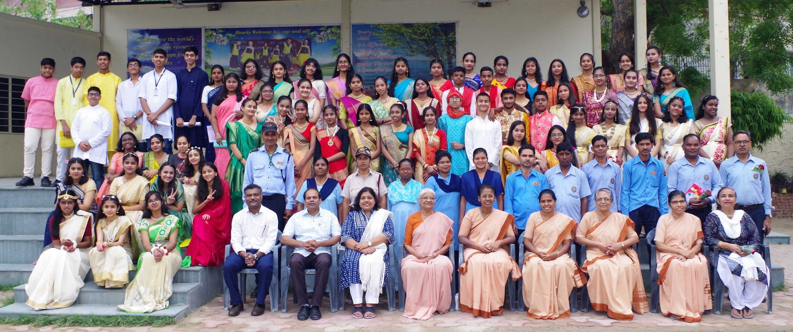– Henry Ford On the 1 st of May, Notre Dame Campus was buzzing with excitement as preparation were made to celebrate the hard-work of the maintenance staff with joy and gratitude. The day initiated with prayers for their well being and their healthy life. Cards, flowers and gifts were offered with love to them. A short cultural program was showcased to enliven the atmosphere and bring a smile on their faces. Vote of thanks from their side was given by Amar Bhaiya who educated students on their role in the upkeep of our esteemed institution. Principal, Sr. Mary Remya blessed them and thanked for their contribution. She reminded all present that they were the real architects of our school and they deserve our love and respect.A sumptuous lunch was arranged for them and they relished it well. With good memories all treaded home!
English Week 24 Apr 2023
All’s well that ends well – William Shakespeare
Notre Dame School Badarpur celebrated Shakespeare’s birthday on April 24, 2023 Monday. Students enacted one of the famous sonnets of the Bard. The seven ages followed by various famous characters portrayal.
English week was organised from May 1 to May 11, 2023. All classes participated with zest and fervour in various activities. Senior school had debate, speech and elocution competitions whereas middle school had storytelling, poem recitation competition.
Junior school had storytelling, speech, poem recitation, role plays etc.
Winners were applauded during the morning assembly and were given certificates by the Principal Sr. Mary Remya.
Hindi and Sanskrit week 24th April - 29th April, 2023
Notre Dame school, Badarpur celebrated Hindi and Sanskrit week from 24th April – 29th April, 2023. successfully. In this performance students of class IV-X participated with great enthusiasm. Total number of participants from each class was 12 students. Classes and activities performed by them were as follows.
Class IV& V - Kavita Vachan pratiyogita
Class VI - Doha Gayan pratiyogita
Class VII - Shlok Gayan pratiyogita
Class VIII - Sahityakaron ka jeevan parichay pratiyogita
Class IX&X - Ashutosh Bhashan pratiyogita
Winners were given certificates during the assembly.
Orientation Program (12/04/23 to 29-04-23)
“Intelligence plus character – that is the goal of true education”
– Martin Luther King Jr.
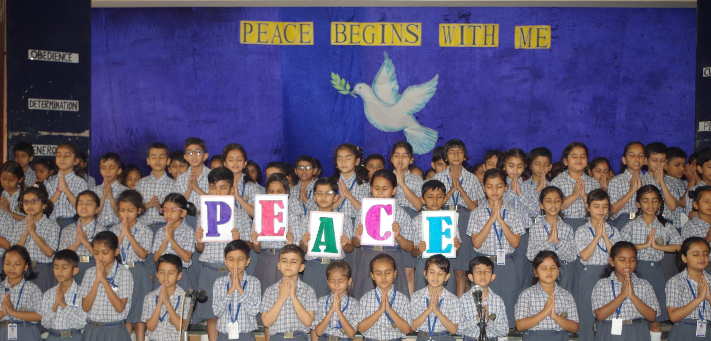As the new academic year set in, Notre Dame school had in store a schedule of PTM and orientation from 12/04/23 to 29-04-23 for the parents of Std I to X and XII.
The main focus was on the holistic development of students from all domains – Social, Emotional, Spiritual, Academics, Physical as well as the care of Mother Earth with ‘PEACE’ as theme of the session.
The response of parents was overwhelming and the preparation made by the school was euphoric. Principal Sr. Mary Remya and Headmistress Sr. Mary Ritika shared their VISION with all present while the educators presented PowerPoint slides with explanation given in English and Hindi.
Gratitude and willingness was in the air as all agreed on their partnership in sprouting the best in their wards………… as all averred – Well Begun is Half Done!
07 FEB 2023
Farewell Rendezvous
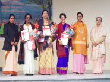
“To meet, to know, to love and then to part, is the sad tale of many a heart.” -Samuel Taylor Coleridge
On 17th of Feb, 2023 the staff and students at Notre Dame School, Badarpur stood in unison , with love and gratitude to bid farewell to their three beloved teachers – Rekha Ma’am, Bannie Ma’am and Catherine Ma’am, all have served this institution for approximately three decades.
The program for the great day initiated with Prayer Service, lighting of the lamp to be followed by appreciation speeches. An array of dances and skits were showcased, each depicting the love of the students towards their mentors. The choir added melody to the presentations.
Tears welled up in the eyes of all, as the Gurus shared reminiscences of the glorious by gone days, travelling down the memory lane, sharing anecdotes – same made all emotional and tickled the laughter bones propelling uproar in the air.
The Farewell Rendezvous was actually a – ‘Celebration of Dedication’ as put by the Principal Sr. Mary Remya who along with Headmistress – Sr. Mary Ritika extended their gratitude towards the retiring mentors and blessed them in abundance for their second innings in life!
Dear Gurus – once a member of Notre Dame Family – you are ALWAYS a loved member of Notre Dame Family. You may not be physically present but you shall always prevail in the minds and hearts of all!
Hasta Manana till we meet again ………………..until then ……..Good luck for the years to unfold!
26 JAN 2023
Republic Day Celebration
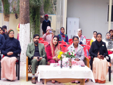
“Give me blood and I shall give you freedom” -Netaji Subhash Chandra Bose
The 74th Republic Day was celebrated by the staff and students of Notre Dame School with great fervour of patriotism. The Chief guest for the occasion was Mrs. Hema Shree Chand Vohara, the Ward Councillor of Jaitpur, New Delhi. The program was initiated with a welcome speech given by the Head girl and was followed by prayers invoking God’s blessings on the country and its citizens. The chief guest addressed everyone and hoisted the flag .All present stood up to sing in unison the National Anthem accompanied by the melodious school Choir. Students of standard Xl took the opportunity and privilege of administering the oath to all present. Poems like…. Aarambh hai prachand bol …and Rehaga Amar Sada balidan ..were recited by students adding to the aura of the day. Agni ki Paras Mani by Rabindranath Tagore was showcased in a dance form with great rhythm and style. The audience were also educated on the making of our constitution. The program found its finale by the release of tricolour balloons and a patriotic speech given by our respected Principal Sister Mary Remya. Everyone was offered sweets as they treaded proudly homeward to watch the National Telecast of our 74th Republic Day!
16 JAN 2023
WELCOME STALWARTS!
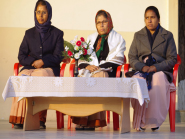
“Small cheer and great welcome makes a merry feast” -William Shakespeare
On 16th Of January, 2023 Notre Dame family, New Delhi, wholeheartedly welcomed Sister Mary Remya (Principal), Sister Mary Ritika (Headmistress) and Sister Mary Tripti (Community Co-ordinator) not only into their campus, but also into their minds and hearts, knowing that each one is highly experienced, learned and adorable.
Welcome dear sisters, we hope that under your leadership and able guidance, education here will achieve greater excellence and reach the apex level of pride and glory.
May the students be led by you all towards upholding the principles of Notre Dame education, which certainly will then echo in their entire disposition. May your tenure here be very enriching and fruitful. May you achieve your vision and mission of – “GLORY TO GOD AND SERVICE TO ALL!”
Welcome once again!
22 DEC 2022
SAYONARA Dear Sisters……. Till we meet again!
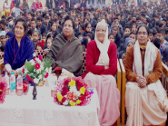
“Let us receive all we need from the hand of our good father” -St. Julie Billiart
On the 22nd of December, the staff and students gathered in the school to bid farewell to their Principal, Sister Mary Alice and Headmistress, Sister Mary Tanya, with heavy hearts and tearful eyes. Sister Mary Alice now heads to Patna as the Provincial of Notre Dame Schools whereas Sister Mary Tanya will take the post of Principal at Notre Dame School, Najafgarh.
Dear Sisters, we wish you all the success, may you rock in your new positions. We here will miss you. But we wish you good luck for your new endeavours.
Sister Mary Alice. You have spent a decade here and have given a real facelift to our institution. We had the privilege of celebrating our school Silver Jubilee, which still lingers in our hearts. You have been a great mentor, friend, guide to all of us and a stalwart of support during our thick and thin times. Your decision making skills have always inspired all of us. You have taught us to have great faith in God. You shall always prevail in our hearts and mind forever and forever.
Dear Sister Mary Tanya, you have made a great impression on all of us. During the very short tenure of your stay here your skills, speeches, patience and kindness have gone a long way in nurturing us all and keeping us strong. We wish you all the best for your future endeavours. Dear Sisters may the good God hold you both in the palms of his hand, and may you be Light to many more, leading from darkness to light – Glory to God and Service to all!
05 SEP 2022
Teachers’ Day Celebration
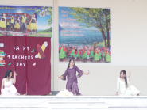
“When we think we know, we cease to learn” -Dr. Sarvepalli Radhakrishnan
On the 5th of September, Notre Dame campus buzzed with great joy and festivity as the campus was decked beautifully. Teachers were seen to be draped in very exclusive attires and most importantly wore a smile, radiating happiness around.
An array of programs was showcased by the students under the guidance of Principal Sr. Mary Alice. Gifts and cards were presented to each with lots of love and gratitude by the school. Lunch was sumptuous and relished by all as a power point presentation was made of yesteryears , making all feel nostalgic!. It was a day of Love and Gratitude!
26 AUG 2022
Induction Ceremony
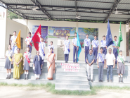
On the 26th of August, the student council was seen marching towards the open stage on martial beats. Yes, it was the long awaited Induction ceremony which was taking place after the lapse of two long Covid years. After invoking God’s blessings and the lighting of the holy lamp, the council was administered the oath of leadership by the Principal Sr. Mary Alice, who also educated them on their roles ahead. The function was crisp and solemn, the school choir added joy to the ceremony as the entire school body joined for the school song. Congratulations to all the members of Notre Dame Student Council.
Student COUNCIL 2022-23
| PRESIDENT | DIYA SHARMA | XI A |
| SECRETARY | NITIKA SHARMA | XI C |
| CULTURAL SECRETARY | PANKAJ KUMAR SHARMA | XI A |
| SPORTS CAPTAIN | AAYUSH RAWAT | XI B |
GANDHI HOUSE
| CAPTAIN | KARTIK BHARDWAJ | XI B |
| VICE CAPTAIN | KARUNYA KAUSHAL | X B |
TAGORE HOUSE
| CAPTAIN | KUSHAGR SENGAR | XI C |
| VICE CAPTAIN | SHREYA UPADHYAY | X C |
SAROJINI HOUSE
| CAPTAIN | ABHAY TIWARI | XI B |
| VICE CAPTAIN | ANVI | X C |
VIVEKANANDA HOUSE
| CAPTAIN | SANVI | XI A |
| VICE CAPTAIN | LAVANYA RAXWAL | X C |
30 July 2022
Seminar on Values Education(CBP for Educators)
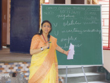
“Ride the energy of your own unique Spirit” – Gabrielle Roth
On the 30th of July, a seminar by Mrs.Anju Mehrotra (Principal of Kalka Public School) was conducted in Notre Dame School for the entire staff. This seminar was a day long, from 9 am – 4:30 pm. This seminar was based on value education to be inculcated in students along with the teaching of various subjects. Notre Dame has a history of imparting value based lessonsas it is one of the core pillars they relent on.
The seminar started with ice-breaking and introduction of the members and strtched to pondering on qualities like – The values to reckon, Why value education?, Mass media and values and entire school appointments to values education.
Activities were initiated to make the seminar more enriching. The motto of ‘Har Ghar Tiranga’ was also emphasised on.
The educators agreed to the CBSE’s ideas and its implementation that the core human values need to be implanted as we all know that the future of a country rests in its classroom!
15 July 2022
Welcome Sr. Mary Shaija!
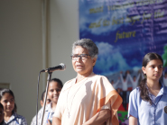
Education is the best Provision for all ages!
Notre dame School, Badarpur was visited by Sr. Mary Shaija – Education Co-ordinator, Notre Dame Schools, Northern Province.
In her honour a special assembly was conducted by the senior students. As a token of love a shawl and a sapling was gifted to sister.
Sr. Mary Shaija visited many classes and helped the teachers in enriching their skills. She also conducted a seminar for all on Lesson Plan and the main features to be included are :
- Choices
- Collaboration
- Critical thinking
- Creativity
- Communication
- Caring
She encouraged teachers to have love for the taught and passion for the subject. A power point presentation of Joe Ruhl was presented and she ended saying “ A teacher should be a guide by the side and not a sage on the stage. Thank you sister your presence and guidance!
12 July 2022
St.Julie’s feast celebrated
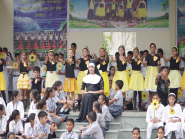
“How good is the good God” – St.Julie Billiart
On the 12th of July, Notre Dame family celebrated the birthday of its Foundress – St. Julie Billiart!
The day initiated with a special assembly .Under the canopy of joy elation and blessings, the life of St. Julie was portrayed by the students on the stage. The Choir grabbed the attention of the attendees through the melodious euphony of songs.
The energy and passion of the students was clearly visible in their performance. Principal Sr. Mary Alice urged students to inculcate the values and principles of Notre Dame as they head towards being Global Citizens! The energy and passion of the students was clearly visible in their performance.
Sweets were distributed to the students and the staff members were treated with a lovely lunch!
02 May 2022
Labour Day Celebration
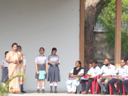
”All labour that uplifts humanity has dignity and importance, hence should be undertaken with painstaking excellence!”
To celebrate this effort by the maintenance staff, who work tirelessly, the International Workers Day also called labour day , was celebrated at Notre dame School Badarpur on 2nd May’22 with great zeal. The maintenance staff, work their fingers to the bone, and keep the wheels of an organization rolling.
Labour Day is a reminder for us that, these are the real architects of our society, and they rightly deserve their respect. The students presented a dance on the newly erected stage, under the guidance of Rai Maam. The maintenance staff was felicitated on the stage with cards and bouquets. On this occasion our Principal Sr. Mary Alice in her speech stated that we must have gratitude in our heart for those who serve us, and this day reminds us to be kind and respectful towards them on a daily basis. She also enlightened the students about the contribution of labourers to our society and how they are the components of the growing economy. The children expressed their love and gratitude by singing songs and dancing.
Later a lunch was hosted for the maintenance staff and gifts were also distributed.
The workers were overwhelmed watching the function and Amar Bhaiyya expressed his gratitude towards the School management, teachers and students for their regard and affection.
Overall the Workers Day was a moment of joy and happiness for the workers and the school. Workers are the ones who make this world a better place to live in.
03 Feb 2021
Farewell to Sir Devasia and Shubha Ma’am
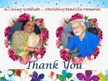
A time to look back with admiration
A time to look forward with anticipation!
For every beginning there must be an end, its paradoxical but that’s how it is. Change is the only constant. Life is incomplete without a mixed bundle of joys and sorrows. On 3rd Feb 2021 the entire Notre Dame family gathered to bid farewell to two exceptional teachers and amazing human beings, Mr. Devasia and Mrs. Shubha. Both were given a warm welcome with a floral bouquet.
The Principal Sr. Mary Alice appreciated and thanked both the teachers for their efforts and sincerity. Lastly Sir Devasia and Shubha ma’am expressed their feelings, their experience and their long journey in Notre Dame School.
We pray God gives both these wonderful human beings, strength and wisdom to continue their good work.
The day was filled with nostalgia, fun and excitement.
06 Feb 2021
Principal’s Day
“Leaders become great not because of their power ,but because they have the ability to empower others.”
On the 6 th of February, Notre Dame staff and students celebrated Virtual Principals Day.
At 9:30 some staff members gathered in the convent for the auspicious lighting of the lamp and cake cutting later in the afternoon around 2:30 the entire staff met virtually to celebrate the day of their dear and dynamic Principals sister Mary Alice and sister Mary Tanya.
The program started with a prayer service by the Student Council members invoking God’s blessings and was followed by an array of program (speeches of appreciation and gratitude, dances, display of cards instrumental music ,songs , etc) through videos collected and collated.
Both the sisters felt overwhelmed with the program. Sister Mary Tanya thanked all with a story . Sister Mary Alice was awestruck at the ability of the teachers to have presented the program in such a meticulous and mesmerizing way. She said that she was very proud of her staff for having updated and upgraded themselves in the technological field. She was filled with gratitude and blessed all .
The program was wrapped up with the singing of the school song joyously in cohesion and unison!
14 Nov 2020
Children’s Day Celebration
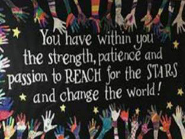
“There is no garden as beautiful as childhood”
Children’s Day this year was celebrated across the city virtually due to the ongoing Covid-19 pandemic restrictions. Besides the grave social, economic, and health impact on people around the globe, the COVID-19 pandemic’s silent blow on children of all ages is profound. But in spite of all these odds, Children’s Day was celebrated in Notre Dame School with a lot of vigour and enthusiasm, virtually.
It was definitely not the same as regular celebrations but the teachers went out of their way to use technology and do the best they could in the times of pandemic. We may not be in the physical space but are connected digitally. Teachers recorded their motivational speeches, sang songs, played games, recited poems etc., all this was live-streamed by the teachers on 14th November in their respective classes.
The Principal, Sr. Mary Alice beautifully explained the students how they need to take up personal responsibility and learn about personal growth and metamorphically stated that children are the light in this world. She also focused on the fact that real education enables us to handle any situation peacefully, finding the good, even in worse situations. She blessed the students and their families, quoting the famous adage,” There are things which you cannot buy which also includes childhood days!”. Students appreciated the creativity of the teachers amid the ‘New Normal’. The programme had a series of interesting and exciting events all planned meticulously for complete entertainment. It was an effort to give back a little, what the children had been deprived of, after the outbreak of this pandemic.
Last year, Greta Thunberg, a Swedish climate activist, took the world by storm after she gave her speech on the importance of active participation to fight climate change. Thunberg is proof of the fact that children are aware of the changes around them and wish to do their part in making the world a better place.
03 Oct 2020
Fit India Freedom Run
“Running the human bodies most to raw freedom.”
Do you remember “The Dandi March “by Mahatma Gandhi ? Well, on 73rd lndependence Day the above program Fit India Freedom run was launched by honourable Prime Minister Mr Narendra Modi to be executed by the ministry of youth affairs and sports.
The main idea was to break the lethargy and anxiety caused due to covid-19 pandemic it was too to galvanise Indians to be healthier, happier and more positive in attitude.
The rules were very simple and inviting— Run your own race; track your own pace; at your own place.
As soon as a circular from the chairman of CBSE Mr Ahuja reached our principal, sister Mary Alice , She swung in full action with a lot of zeal and zest encouraging teachers parents and students to participate.
Approximately there were over 2000 participants posting pictures ,track record GPS and videos of students ,parents and teachers. The response was stupendous and overwhelming .It was a Herculean success. Notre Dame School Badarpur was awarded for successfully organising the run.
After all we know this pandemic covid-19 will pass as…
Tough runs don’t last ;Tough runners do !
05 Sep 2020
Teachers’ Day
FROM CRISIS TO……. CREATIVITY
“Necessity is the mother of invention.” – Plato
On the 5th of September surprise awaited the staff of Notre Dame School when they were requested to join a link sent to them… what followed was a spectacular and awesome program put up by the students under the able guidance of Principal, Sr. Mary Alice. Program started with prayers invoking God’s Blessings on all.
Speeches overflowing with love and gratitude was addressed to the teaching faculty by the President, Vice President and other council members.
An array of vibrant program was presented by the students of all sections of the school.
The students thanked the teachers for educating and updating themselves with technology so as to teach, empower and inspire the students in all ways possible. The teachers felt overwhelmed and expressed their gratitude towards the Principal, institution and the student’s for their love exhibited.
The covid crisis… has brought out many hidden talents of people. Sr. Alice made it known to the staff members regarding a book published by ma’am Ramaa Shankar …. ‘Handle with care..Small Things Matter’. On this happy note the program was wrapped up…encouraging all to explore within and challenge oneself !
15 Feb 2020
Jubilee of Mrs. Usha James and Mrs.Florence Kisku
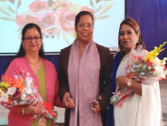
A time to look back with admiration
A time to look forward with anticipation
On 15th February 2020, Notre Dame Academy celebrated 25 long, glorious and successful years of service rendered by Mrs. Usha James and Mrs. Florence Kisku with devotion , dedication and commitment.
The students put up a mesmerizing and enthusiastic cultural programme to mark the momentous occasion. They expressed their love and gratitude with their words of appreciation for these two teachers whose love and care have touched so many lives.
Our respected Principal Sr. Mary Alice, thanked Mrs. Usha James and Mrs. Florence Kisku for their valuable contribution to the Notre Dame Academy. Their presence has overseen Notre Dame rise from its infancy to its present glory and will continue to excel as for many more years to come.
01 Feb 2020
Educational Visit to The National Science Centre, New Delhi
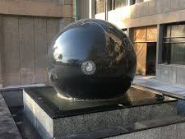
The students of class VII, VIII and IX visited The National Science Center, Delhi as a part of the educational tour this month. The National Science Center is a science museum that is engaged in popularization of science among the students. The aim of the visit was to develop the science awareness and scientific temper among the students.
The students were first invited to the auditorium for a short program on optics, and later they explained them about the functioning of India’s Thirty Meter Telescope. A short quiz was also held in which the winners were awarded small gifts.
The students were greatly excited about the exhibition halls, especially the galleries ‘Our Science and Technology Heritage’.
Besides these, there were small but attention grabbing exhibits and a maze 9f mirrors which gives illusionary effect which invoked much interest in students. The students thoroughly enjoyed the visit and the plethora of exhibits left them spell bound. They were really drawn in the magical world of science and were greatly inspired. The trip was an enriching experience for all.
18 Jan 2020
Goodbye Sir Jose
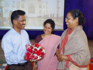
Goodbyes are only for those who love with their eyes. Because, for those who love with their heart and soul, there is no such thing as separation! But for every beginning, there must be an end. It’s paradoxical but that’s how it is.
On January 18, 2020, the entire Notre Dame family gathered to bid farewell to an exceptional teacher, an altruistic human being, Sir Jose. The beauty of the stage was enhanced by an aesthetically pleasing backdrop and the lamp waiting to be lighted. The amazing programme began with a prayer song and a prayer dance. The students were beautifully dressed and they presented a number of dance performances. Students presented some skits, followed by speeches appreciating the nature of Sir Jose.
This sense of humour and his dressing sense would be adamantly admired by everyone. He would be remembered by many students as a guide and mentor who helped shape their lives for the better. He is extremely charismatic and knew how to interact with his students on a personal level. He knew the art of adding charm to even the most boring lesson.
His finesse and his passion for literature gave him an unmatched ability to add life to mere fictional characters. The programme ended with a song by the choir, melodiously sung.
Lastly, Sir Jose expressed his feelings, his experiences and his journey in Notre Dame School after which Sr. Alice appreciated Sir and blessed the gathering. The day was great, filled with nostalgia, fun and excitement. Saying good bye is never easy. But, that is a bitter truth of life.
21 Dec 2019
Christmas Celebration
Joy to the world The Lord has come!
Christmas is the festival which inspires the spirit if sharing and caring. Soaking in the spirit of Christmas, the students of Notre Dame School celebrated the festival of Christmas with enthusiasm on the 21st of December 2019.
Leaving no stone unturned to sprinkle the magic of their love, the stage was wholly decorated by the students. The programme started with a prayer dance followed by a beautifully staged skit, directed by Sir Jose, depicting the significance of the festival, showcasing the life and journey of Jesus Christ.
The elements of energy and momentum could be witnessed in the children as they came forward and presented their items. Lastly the much awaited Santa Claus entered the stage with his elves and reindeers, boasting up the energy level of the students. A brief history of Santa Claus was depicted through dance and narrations. The programme ended with the choir singing melodious carols.
The Principal, Sr. Mary Alice threw light on the importance of the day and blessed the gathering with her inspirational words.